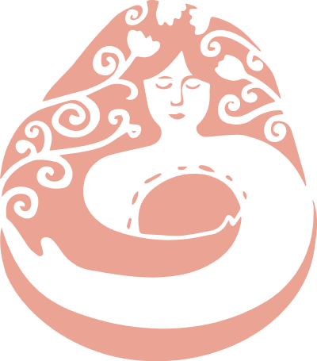

Womb ・ Moon ・ Alchemy
週期羅盤
妳的身體，一個月裡並不是同一個人。有滿的時候，有縮回去的時候，也有要放掉的時候。
這裡不是要把那個起伏修好，是讓它變成一張看得懂的地圖。
沒有月經也算數——懷孕中、產後、哺乳中、吃藥中、停經後，都可以。
月亮的節奏，本來就流在「有沒有來月經」之外的地方。
The Blood Mysteries
血的三道門檻
一個女人一生會走過三次「血改變了」的時刻。
每個月的那一輪，是同一件事的小版本。

About
欣妙 ・ Milliya
陪妳生，也陪妳生出新的自己
Birth with Milliya・欣妙在陪妳工作室創辦人，兩個孩子的母親。
溫柔生產陪產員（Doula）、EmbodyBirth 覺知分娩倡導者、
獨立生產顧問（Radical Birth Keeper）、Womb-Moon 認證女人圈引導師。
陪過二十多個家庭迎接他們的孩子。在日本湘南，也在線上。
兩次溫柔的生產讓我知道一件事：女人在被信任、被支持的時候，生命會自己打開。
所以我做的事其實只有一件——陪著妳，直到妳想起自己本來就會。

WOMB ・ MOON ・ ALCHEMY